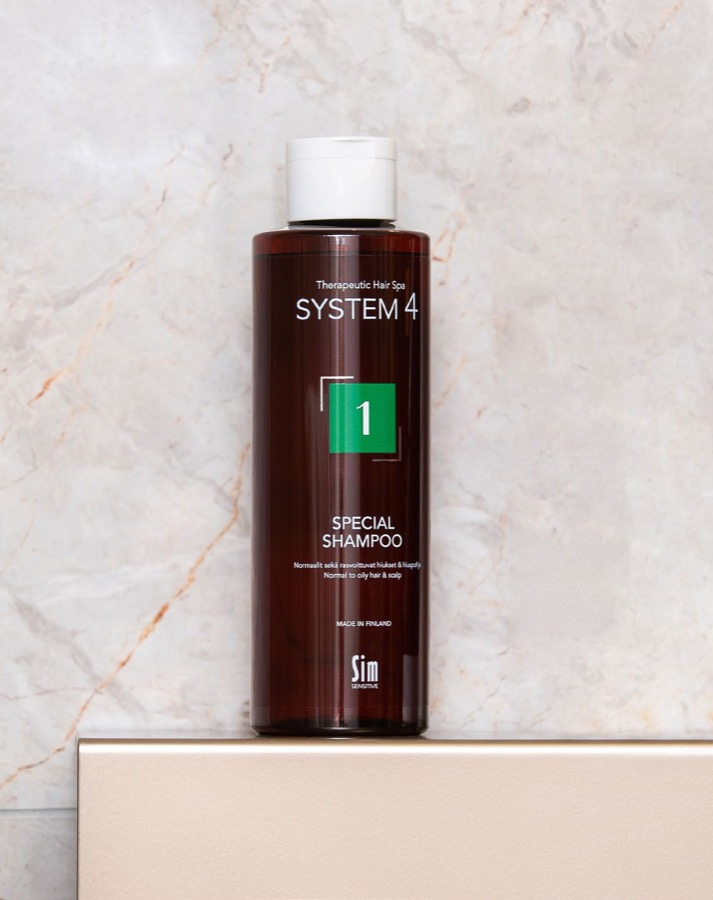

Щоденне очищення волосся
Hair Shampoo with Kopyrrol
300 мл
Ціна за запитом
HAIR BALANCE / ДОГЛЯД У ВАШОМУ РИТМІ
Волосся та шкіра голови мають різні потреби. Оберіть засоби Good Hair, System 4, ORising та Eliokap відповідно до потреб свого догляду.
Очищення. Зволоження. Баланс.
Проста рутина з увагою до деталей.

ЗНАЙОМСТВО З SYSTEM 4Good Hair & System 4
ПОЧНІМО З ПРОСТОГО
Не обов’язково збирати складну рутину. Важливіше зрозуміти, чого зараз потребують волосся та шкіра голови.
ОБИРАЙТЕ СВІЙ РИТУАЛ
Чотири бренди для продуманого догляду.
Від очищення до фінішу для довжини.
22 засоби
Щоденне очищення волосся
300 мл
Очищення шкіри голови
100 мл
Догляд за шкірою голови
100 мл
Харчова добавка
30 капсул
Жирна шкіра голови та лупа
75, 250, 500 мл
Суха шкіра голови та лупа
75, 250, 500 мл
Для підтримувального догляду
75, 250, 500 мл
Надмірно жирна шкіра голови
75, 250, 500 мл
Тонке волосся, що випадає
75, 250, 500 мл
Сухе та фарбоване волосся
75, 150, 500 мл
Кондиціонер для тонкого волосся
150, 500 мл
Ексфоліант для шкіри голови
75, 150, 500 мл
Незмивний спрей-кондиціонер
50, 150 мл
Зволоження сухої шкіри голови
150 мл
Тонік для жирної шкіри голови
50, 150, 500 мл
Сироватка для тонкого волосся
50, 150, 500 мл
Очищення ослабленого волосся
100, 250, 750 мл
Живлення сухої довжини
75, 150, 250, 500 мл
Додатковий догляд за шкірою голови
100 мл
Делікатне очищення шкіри голови
250, 500 мл
Зволоження та еластичність волосся
125, 250 мл
Блиск і м’якість довжини та кінчиків
60 мл
Спробуйте іншу назву або приберіть фільтри.
Ціни, об’єми в наявності та остаточну вартість уточнюємо перед підтвердженням замовлення. Описи та об’єми засобів — за наданими прайсами й матеріалами брендів. Засоби догляду не замінюють консультацію лікаря.
ПОСЛІДОВНІСТЬ МАЄ ЗНАЧЕННЯ
Шампунь очищає шкіру голови. Кондиціонер доглядає за довжиною. Додатковий засіб доповнює рутину, коли в цьому є потреба.
Підкажемо, як зорієнтуватися в асортименті та рекомендаціях виробника. Без зайвих кроків і випадкових покупок.
Отримати консультаціюКнопка «Замовити» додасть назву товару до вашого звернення. Якщо потрібна порада — розкажіть про бажаний догляд.
До підтвердження уточнимо доступний об’єм, суму замовлення, спосіб оплати й деталі відправлення.
Відправлення Новою поштою по Україні — до доступного відділення або на адресу. Вартість доставки — за тарифами перевізника; термін узгоджуємо перед оплатою.
КОРИСНО ЗНАТИ
Натисніть «Замовити» біля засобу або зателефонуйте Євгенії. Уточнимо доступні об’єми та актуальну ціну перед підтвердженням.
Так. Опишіть, який догляд шукаєте, у формі нижче. Допоможемо зорієнтуватися в асортименті. За стійких або виражених проблем зі шкірою голови зверніться до лікаря.
Форма готує текст звернення та лист на husakova.evhenyia@gmail.com. Ви переглядаєте його й самостійно надсилаєте зі своєї пошти. Також можна зателефонувати напряму.
Зверніться за контактами продавця й повідомте деталі замовлення та причину звернення. Умови конкретного випадку узгодимо перед поверненням товару.
ПОГОВОРІМО ПРО ВАШ ДОГЛЯД
Потрібна ціна, наявність або допомога з вибором? Зателефонуйте чи підготуйте коротку заявку.
+380 99 299 83 62husakova.evhenyia@gmail.comРНОКПП / ЄДРПОУ: 3113019340
РЕКВІЗИТИ ПРОДАВЦЯ
Оплачуйте лише після узгодження наявності, суми та деталей замовлення.